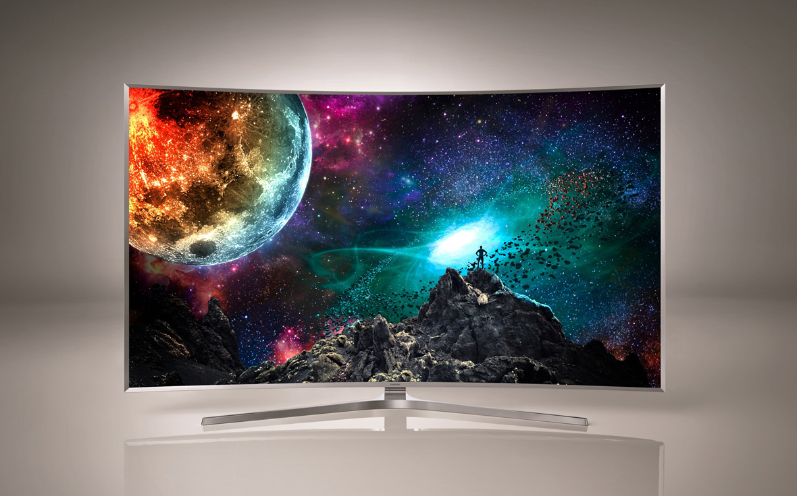

Samsung Revolutionizes the Viewing Experience With Innovative New SUHD TV

When Samsung introduced the curved form-factor in 2013, it dramatically enhanced the home entertainment experience for consumers. Taking cues from contemporary art and architecture, Samsung’s were designed and enhanced with many modern and minimalist highlights.
Samsung SUHD TV JS9500 will feature Samsung’s Chamfer bezel design, adding more depth to the TV screen, and the elegant frame makes the TV look like a piece of art when mounted on the wall.
SUHD TV JS900 model has a soft, textured Shirring design on the back, ensuring the TV maintains its stylish edge from any angle.
New Smart TV Redefines the Future Entertainment Experience
New for 2015, all of Samsung’s Smart TVs, including the new SUHD TV, will be powered by Tizen, an open-source platform that supports the web standard for TV app development. Thanks to Tizen, Samsung’s new Smart TV platform not only has a bevy of new features, but it also allows consumers intuitive access, a more integrated entertainment experience, and more choices for content than ever before.
- The new user interface for Samsung’s Smart Hub is more responsive and playful, allowing users easier access to the content they want. It is simplified to just one screen, displaying your most recent content and tailored content recommendations for even more entertainment options.
- With Quick Connect, Samsung Smart TVs automatically recognize Samsung smartphones once paired via BLE (Bluetooth Low Energy) technology. Consumers can share video content from their Samsung smart phone to their Smart TV with the press of a button. Also, users can watch TV through their mobile devices without any apps or complicated pre-settings.
- Consumers will be able to view UHD movies and TV shows from providers such as Amazon, Comcast, DIRECTV and M-GO. In addition, Samsung has enabled a new UHD movie download service utilizing its existing UHD Video Pack in partnership with M-GO, a premium TVOD service and joint venture between Technicolor and DreamWorks Animation. This download service which uses the SCSA (Secure Content Storage Association) standards. In 2015, this service will offer the highest quality content for both Samsung SUHD and UHD TVs.
- Samsung Sports Live allows users to watch live games while simultaneously checking team and player stats on the same screen. Samsung has also partnered with global games companies for a large and varied games catalogue.
Samsung SUHD TV JS9500 will feature Samsung’s Chamfer bezel design, adding more depth to the TV screen, and the elegant frame makes the TV look like a piece of art when mounted on the wall.
SUHD TV JS900 model has a soft, textured Shirring design on the back, ensuring the TV maintains its stylish edge from any angle.
New Smart TV Redefines the Future Entertainment Experience
New for 2015, all of Samsung’s Smart TVs, including the new SUHD TV, will be powered by Tizen, an open-source platform that supports the web standard for TV app development. Thanks to Tizen, Samsung’s new Smart TV platform not only has a bevy of new features, but it also allows consumers intuitive access, a more integrated entertainment experience, and more choices for content than ever before.
- The new user interface for Samsung’s Smart Hub is more responsive and playful, allowing users easier access to the content they want. It is simplified to just one screen, displaying your most recent content and tailored content recommendations for even more entertainment options.
- With Quick Connect, Samsung Smart TVs automatically recognize Samsung smartphones once paired via BLE (Bluetooth Low Energy) technology. Consumers can share video content from their Samsung smart phone to their Smart TV with the press of a button. Also, users can watch TV through their mobile devices without any apps or complicated pre-settings.
- Consumers will be able to view UHD movies and TV shows from providers such as Amazon, Comcast, DIRECTV and M-GO. In addition, Samsung has enabled a new UHD movie download service utilizing its existing UHD Video Pack in partnership with M-GO, a premium TVOD service and joint venture between Technicolor and DreamWorks Animation. This download service which uses the SCSA (Secure Content Storage Association) standards. In 2015, this service will offer the highest quality content for both Samsung SUHD and UHD TVs.
- Samsung Sports Live allows users to watch live games while simultaneously checking team and player stats on the same screen. Samsung has also partnered with global games companies for a large and varied games catalogue.